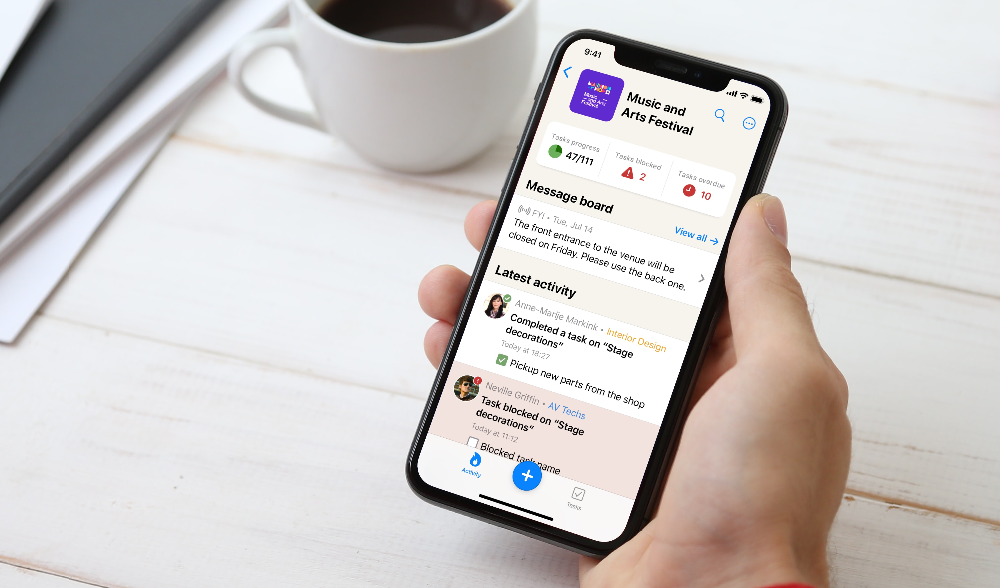

Task Manager App for Event Coordinators

About the project
Designs for a mobile app for Spiral — a task manager app aimed at event organizers and coordinators.
My role included:
– User experience (UX)
– User flows
– Wireframes
– Prototypes
– User interface (UI)
Multiple events
The app helps event coordinators get a birds-eye view of the preparations for multiple events. See how’s the tasks progress looks like and get notified about any problems.